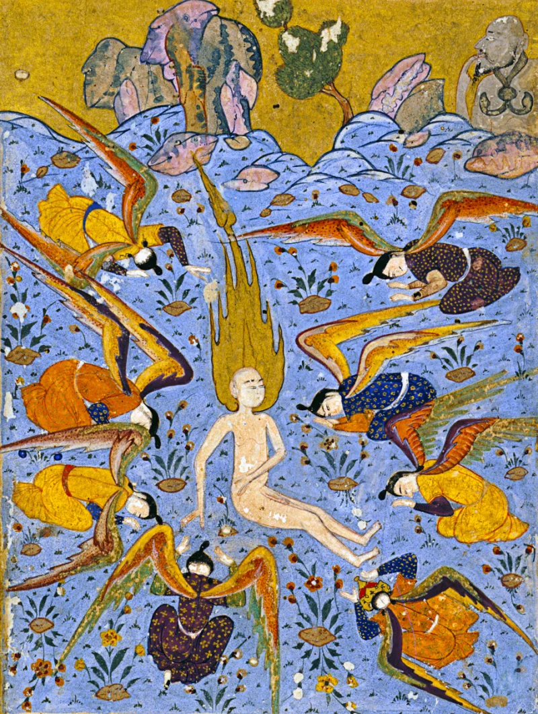
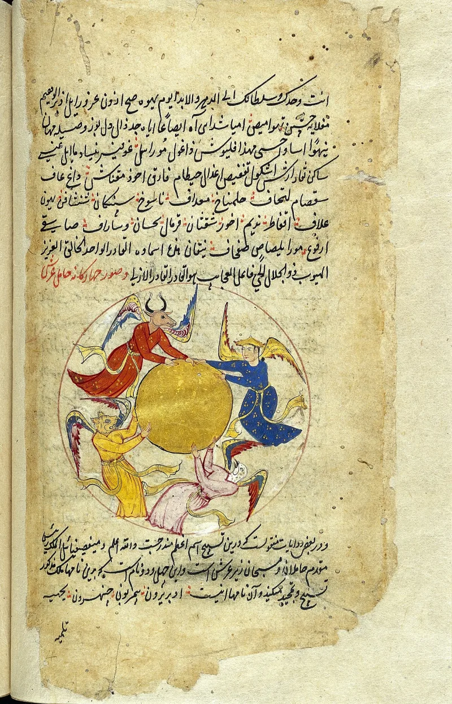
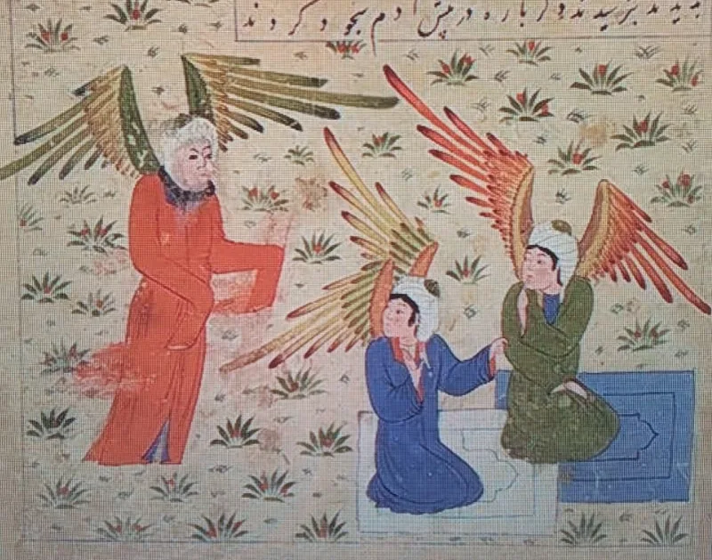

Muslim scholars have a real answer here. Say so before your friend does.
The angels are told to bow to Adam, "and they prostrated, except Iblis" (Quran 2:34; 7:11; 15:30-31; 20:116; 38:73-74). That grammar counts Iblis among the angels.
Quran 18:50 says "he was of the jinn, so he rebelled." Two more details tighten it. Quran 66:6 says angels never disobey Allah.
And Iblis says he was made from fire (7:12), while Sahih Muslim 2996 says angels were made from light and jinn from smokeless fire.
The tafsir tradition offers three repairs. Al-Tabari, following reports from Ibn Abbas, says Iblis belonged to a tribe of angels called jinn, guardians of Paradise, made from fire.
Al-Hasan al-Basri, cited approvingly by Ibn Kathir, says Iblis "was not an angel for the twinkling of an eye" — the exception in 2:34 is disconnected, meaning he was merely present when the command came. Al-Baydawi says he was created an angel and became jinn by his deed.
The tradition never settled it, and the three repairs rule each other out. Al-Tabari's angel-tribe saves the grammar of 2:34 but collides with 66:6 and with the light-and-fire distinction.
Al-Hasan al-Basri's answer saves 18:50, but only by making the Quran's own repeated sentence misleading five times over.
Genuinely arguable, but unusually clean in conversation. It needs no outside sources at all, only the Quran read slowly.
Pick either horn and let the tafsir tradition supply the other.
"Was Iblis an angel or a jinn? I have read three answers from your scholars and they disagree."



They say Iblis was of a fire-made angel tribe, or never an angel at all.
The tafsir literature offers three classical repairs. Al-Tabari, following reports from Ibn Abbas, holds that Iblis belonged to a tribe of angels called jinn. They were guardians of Paradise, created from fire.
Al-Hasan al-Basri, cited approvingly by Ibn Kathir, holds that Iblis was not an angel for the twinkling of an eye. On that reading the exception in 2:34 is a disconnected one. It means only that he was among the angels when the command came.
Al-Baydawi holds a third view. Iblis was created an angel, and became jinn by his deed.
Arguable, but very clean: the three repairs rule each other out.
The tradition never settled it, and the three repairs rule each other out. Al-Tabari's angel-tribe called jinn saves the grammar of 2:34. But it collides with 66:6, since angels cannot disobey. It collides too with the light-and-fire divide. Al-Hasan al-Basri's never-an-angel saves 18:50. But it does so only by making the Quran's own repeated sentence misleading five times over.
In talk this is a clean test, and it stands on its own. It needs no outside sources, only the Quran read slowly. Pick either horn, and let the tafsir tradition supply the other.